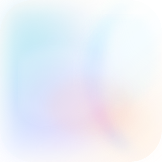

D01 v05 小T / 3D亲民助手
用于封面、角色选择、首页提示和空状态。本轮保持 v05，不再调整。
- 重点看：是否有 3D 实体感和亲和力。
- 通过：可爱但不幼稚，柔和但不模板，智能但不过硬科技。
- 不通过：像硬科技设备、贴纸头像、参考图复刻或过度吉祥物化。
assets-review/d01-assistant-direction-v05.svg
本版只重点修正 D02：参考用户提供的空气感渐变、半透明弧面和柔和粉蓝紫氛围，但不复制参考图形态、不做硬实体、不做可见线条。当前组合评审目标更新为：D01 v05 + D02 v05 + D03-D04 v04。
用于封面、角色选择、首页提示和空状态。本轮保持 v05，不再调整。

用于数据分析、设置、系统健康和 AI 洞察页面的背景氛围。蓝青、淡紫和粉色提供清透智能感，橙色只作为 Tappo 品牌的柔暖支撑。
用于应用中心、设置入口和数据模块。本轮不修改，沿用 v04 同版评审。

用于支付设置、充值、收款说明等页面。本轮不修改，沿用 v04 整洁版本。